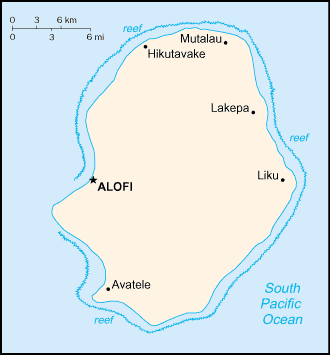
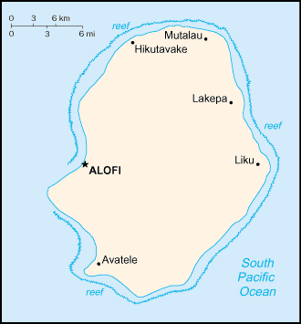

-
Introduction :: Niue
-
Background:Niue's remoteness, as well as cultural and linguistic differences between its Polynesian inhabitants and those of the adjacent Cook Islands, has caused it to be separately administered by New Zealand. The population of the island continues to drop (from a peak of 5,200 in 1966 to 1,618 in 2017) with substantial emigration to New Zealand 2,400 km to the southwest.
-
Geography :: Niue
-
Location:Oceania, island in the South Pacific Ocean, east of TongaGeographic coordinates:19 02 S, 169 52 WMap references:OceaniaArea:total: 260 sq kmland: 260 sq kmwater: 0 sq kmcountry comparison to the world: 213Area - comparative:1.5 times the size of Washington, DCLand boundaries:0 kmCoastline:64 kmMaritime claims:territorial sea: 12 nmexclusive economic zone: 200 nmClimate:tropical; modified by southeast trade windsTerrain:steep limestone cliffs along coast, central plateauElevation:0 m lowest point: Pacific Ocean80 highest point: unnamed elevation 1.4 km east of HikutavakeNatural resources:arable land, fishLand use:agricultural land: 19.1% (2011 est.)arable land: 3.8% (2011 est.) / permanent crops: 11.5% (2011 est.) / permanent pasture: 3.8% (2011 est.)forest: 71.2% (2011 est.)other: 9.7% (2011 est.)Irrigated land:0 sq km (2012)Population distribution:population distributed around the peripheral coastal areas of the islandNatural hazards:tropical cyclonesEnvironment - current issues:increasing attention to conservationist practices to counter loss of soil fertility from traditional slash and burn agricultureEnvironment - international agreements:party to: Biodiversity, Climate Change, Climate Change-Kyoto Protocol, Desertification, Law of the Sea, Ozone Layer ProtectionGeography - note:one of world's largest coral islands; the only major break in the surrounding coral reef occurs in the central western part of the coast
-
People and Society :: Niue
-
Population:1,618 (July 2017 est.)
note: because of the island's limited economic and educational opportunities, Niueans have emigrated for decades - primarily to New Zealand, but also to Australia and other Pacific island states; Niue's population peaked in 1966 at 5,194, but by 2005 had fallen to 1,508; since then it has rebounded slightly; as of 2013, 23,883 people of Niuean ancestry lived in New Zealand - with more than 20% Niue-born; this means that there are about 15 times as many persons of Niuean living in New Zealand as in Niue, possibly the most eccentric population distribution in the world
country comparison to the world: 233Nationality:noun: Niuean(s)adjective: NiueanEthnic groups:Niuen 66.5%, part-Niuen 13.4%, non-Niuen 20.1% (includes 12% European and Asian and 8% Pacific Islanders) (2011 est.)Languages:Niuean (official) 46% (a Polynesian language closely related to Tongan and Samoan), Niuean and English 32%, English (official) 11%, Niuean and others 5%, other 6% (2011 est.)Religions:Ekalesia Niue (Congregational Christian Church of Niue - a Protestant church founded by missionaries from the London Missionary Society) 67%, other Protestant 3% (includes Seventh Day Adventist 1%, Presbyterian 1%, and Methodist 1%), Mormon 10%, Roman Catholic 10%, Jehovah's Witnesses 2%, other 6%, none 2% (2011 est.)Population growth rate:-0.03% (2014 est.)country comparison to the world: 199Population distribution:population distributed around the peripheral coastal areas of the islandUrbanization:urban population: 44.8% of total population (2018)rate of urbanization: 1.69% annual rate of change (2015-20 est.)Major urban areas - population:1,000 ALOFI (capital) (2018)Sex ratio:NAInfant mortality rate:total: NAmale: NAfemale: NALife expectancy at birth:total population: NA (2017 est.)male: NA (2017 est.)female: NA (2017 est.)Total fertility rate:NAHealth expenditures:7.4% of GDP (2014)country comparison to the world: 73Physicians density:1.84 physicians/1,000 population (2008)Drinking water source:improved: urban: 98.4% of populationrural: 98.6% of populationtotal: 98.5% of populationunimproved: urban: 1.6% of populationrural: 1.4% of populationtotal: 1.5% of population (2015 est.)Sanitation facility access:improved: urban: 100% of population (2015 est.)rural: 100% of population (2015 est.)total: 100% of population (2015 est.)unimproved: urban: 0% of population (2015 est.)rural: 0% of population (2015 est.)total: 0% of population (2015 est.)HIV/AIDS - adult prevalence rate:NAHIV/AIDS - people living with HIV/AIDS:NAHIV/AIDS - deaths:NAObesity - adult prevalence rate:50% (2016)country comparison to the world: 6Education expenditures:NA -
Government :: Niue
-
Country name:conventional long form: noneconventional short form: Niueformer: Savage Islandetymology: the origin of the name is obscure; in Niuean, the word supposedly translates as "behold the coconut"
note: pronunciation falls between nyu-way and new-way, but not like new-wee
Dependency status:self-governing in free association with New Zealand since 1974; Niue fully responsible for internal affairs; New Zealand retains responsibility for external affairs and defense; however, these responsibilities confer no rights of control and are only exercised at the request of the Government of NiueGovernment type:self-governing parliamentary democracy (Fouo Ekepule) in free association with New ZealandCapital:name: Alofigeographic coordinates: 19 01 S, 169 55 Wtime difference: UTC-11 (6 hours behind Washington, DC, during Standard Time)Administrative divisions:none; note - there are no first-order administrative divisions as defined by the US Government, but there are 14 villages at the second orderIndependence:19 October 1974 (Niue became a self-governing state in free association with New Zealand)National holiday:Waitangi Day (Treaty of Waitangi established British sovereignty over New Zealand), 6 February (1840)Constitution:history: several previous (New Zealand colonial statutes); latest 19 October 1974 (Niue Constitution Act 1974) (2017)amendments: proposed by the Assembly; passage requires at least two-thirds majority vote of the Assembly membership in each of three readings and approval by the majority of votes in a referendum; passage of amendments to a number of sections including Niue’s self-governing status, British nationality and New Zealand citizenship, external affairs and defense, economic and administrative assistance by New Zealand, and amendment procedures requires at least two-thirds majority vote by the Assembly and at least two-thirds of votes in a referendum; amended 1992, 2007 (2017)Legal system:English common lawSuffrage:18 years of age; universalJudicial branch:highest courts: Court of Appeal (consists of the chief justice and up to 3 judges); note - the Judicial Committee of the Privy Council (in London) is the final appeal court beyond the Niue Court of Appealjudge selection and term of office: Niue chief justice appointed by the governor general on the advice of the Cabinet and tendered by the premier; other judges appointed by the governor general on the advice of the Cabinet and tendered by the chief justice and the minister of justice; judges serve until age 68subordinate courts: High Courtnote: Niue is a participant in the Pacific Judicial Development Program, which is designed to build governance and the rule of law in 15 Pacific island countries
Executive branch:chief of state: Queen ELIZABETH II (since 6 February 1952); represented by Governor General of New Zealand Governor General Dame Patricia Lee REDDY (since 28 September 2016); the UK and New Zealand are represented by New Zealand High Commissioner Ross ARDEN (since February 2014)head of government: Premier Toke TALAGI (since 18 June 2008)cabinet: Cabinet chosen by the premierelections/appointments: the monarchy is hereditary; premier indirectly elected by the Legislative Assembly for a 3-year term; election last held on 12 May 2017 (next to be held in 2020)election results: Toke TALAGI reelected premier; Legislative Assembly vote - Toke TALAGI (independent) 15, O'Love JACOBSEN (independent) 5Legislative branch:description: unicameral Assembly or Fono Ekepule (20 seats; 14 members directly elected in single-seat constituencies by simple majority vote and 6 directly elected from the National Register or "common roll" by majority vote; members serve 3-year terms)elections: last held on 6 May 2017 (next to be held in 2020)election results: percent of vote by party - NA; seats by party - independent 20; composition - men 15, women 5, percent of women 25%Political parties and leaders:Alliance of Independents or AI
Niue People's Action Party or NPP [Young VIVIAN]International organization participation:ACP, AOSIS, FAO, IFAD, OPCW, PIF, Sparteca, SPC, UNESCO, UPU, WHO, WIPO, WMODiplomatic representation in the US:none (self-governing territory in free association with New Zealand)Diplomatic representation from the US:none (self-governing territory in free association with New Zealand)Flag description:yellow with the flag of the UK in the upper hoist-side quadrant; the flag of the UK bears five yellow five-pointed stars - a large star on a blue disk in the center and a smaller star on each arm of the bold red cross; the larger star stands for Niue, the smaller stars recall the Southern Cross constellation on the New Zealand flag and symbolize links with that country; yellow represents the bright sunshine of Niue and the warmth and friendship between Niue and New ZealandNational symbol(s):yellow, five-pointed star; national color: yellowNational anthem:name: "Ko e Iki he Lagi" (The Lord in Heaven)lyrics/music: unknown/unknown, prepared by Sioeli FUSIKATAnote: adopted 1974
-
Economy :: Niue
-
Economy - overview:
The economy suffers from the typical Pacific island problems of geographic isolation, few resources, and a small population. The agricultural sector consists mainly of subsistence gardening, although some cash crops are grown for export. Industry consists primarily of small factories for processing passion fruit, lime oil, honey, and coconut cream. The sale of postage stamps to foreign collectors is an important source of revenue.
Government expenditures regularly exceed revenues, and the shortfall is made up by critically needed grants from New Zealand that are used to pay wages to public employees. Economic aid allocation from New Zealand in FY13/14 was US$10.1 million. Niue has cut government expenditures by reducing the public service by almost half.
The island in recent years has suffered a serious loss of population because of emigration to New Zealand. Efforts to increase GDP include the promotion of tourism and financial services, although the International Banking Repeal Act of 2002 resulted in the termination of all offshore banking licenses.
GDP (purchasing power parity):$10.01 million (2003 est.)country comparison to the world: 228GDP (official exchange rate):$10.01 million (2003) (2003)GDP - real growth rate:6.2% (2003 est.)country comparison to the world: 32GDP - per capita (PPP):$5,800 (2003 est.)country comparison to the world: 168GDP - composition, by sector of origin:agriculture: 23.5% (2003)industry: 26.9% (2003)services: 49.5% (2003)Agriculture - products:coconuts, passion fruit, honey, limes, taro, yams, cassava (manioc, tapioca), sweet potatoes; pigs, poultry, beef cattleIndustries:handicrafts, food processingIndustrial production growth rate:NALabor force:663 (2001)country comparison to the world: 230Labor force - by occupation:note: most work on family plantations; paid work exists only in government service, small industry, and the Niue Development Board
Unemployment rate:12% (2001)country comparison to the world: 159Population below poverty line:NAHousehold income or consumption by percentage share:lowest 10%: NAhighest 10%: NABudget:revenues: 15.07 million (FY04/05)expenditures: 16.33 million (FY04/05)Budget surplus (+) or deficit (-):-12.6% (of GDP) (FY04/05)country comparison to the world: 215Fiscal year:1 April - 31 MarchInflation rate (consumer prices):4% (2005)country comparison to the world: 155Exports:$201,400 (2004 est.)country comparison to the world: 221Exports - commodities:canned coconut cream, copra, honey, vanilla, passion fruit products, pawpaws, root crops, limes, footballs, stamps, handicraftsImports:$9.038 million (2004 est.)country comparison to the world: 222Imports - commodities:food, live animals, manufactured goods, machinery, fuels, lubricants, chemicals, drugsDebt - external:$418,000 (2002 est.)country comparison to the world: 202Exchange rates:New Zealand dollars (NZD) per US dollar -1.416 (2017 est.)1.4279 (2016 est.)1.4279 (2015)1.4279 (2014 est.)1.2039 (2013 est.) -
Energy :: Niue
-
Electricity - production:3 million kWh (2016 est.)country comparison to the world: 216Electricity - consumption:2.79 million kWh (2016 est.)country comparison to the world: 215Electricity - exports:0 kWh (2016 est.)country comparison to the world: 179Electricity - imports:0 kWh (2016 est.)country comparison to the world: 181Electricity - installed generating capacity:2,300 kW (2016 est.)country comparison to the world: 214Electricity - from fossil fuels:87% of total installed capacity (2016 est.)country comparison to the world: 65Electricity - from nuclear fuels:0% of total installed capacity (2017 est.)country comparison to the world: 158Electricity - from hydroelectric plants:0% of total installed capacity (2017 est.)country comparison to the world: 191Electricity - from other renewable sources:13% of total installed capacity (2017 est.)country comparison to the world: 68Crude oil - production:0 bbl/day (2017 est.)country comparison to the world: 183Crude oil - exports:0 bbl/day (2015 est.)country comparison to the world: 177Crude oil - imports:0 bbl/day (2015 est.)country comparison to the world: 178Crude oil - proved reserves:0 bbl (1 January 2018 est.)country comparison to the world: 179Refined petroleum products - production:0 bbl/day (2017 est.)country comparison to the world: 187Refined petroleum products - consumption:50 bbl/day (2016 est.)country comparison to the world: 215Refined petroleum products - exports:0 bbl/day (2015 est.)country comparison to the world: 189Refined petroleum products - imports:54 bbl/day (2015 est.)country comparison to the world: 211Natural gas - production:0 cu m (2017 est.)country comparison to the world: 181Natural gas - consumption:0 cu m (2017 est.)country comparison to the world: 185Natural gas - exports:0 cu m (2017 est.)country comparison to the world: 164Natural gas - imports:0 cu m (2017 est.)country comparison to the world: 170Natural gas - proved reserves:0 cu m (1 January 2014 est.)country comparison to the world: 179Carbon dioxide emissions from consumption of energy:7,252 Mt (2017 est.)country comparison to the world: 213
-
Communications :: Niue
-
Telephone system:domestic: single-line (fixed line) telephone system connects all villages (and virtually all households) on island (2015)international: country code - 683 (2015)Broadcast media:1 government-owned TV station with many of the programs supplied by Television New Zealand; 1 government-owned radio station broadcasting in AM and FM (2009)Internet country code:.nuInternet users:total: 1,090 (July 2016 est.)percent of population: 91.6% (July 2016 est.)country comparison to the world: 223
-
Transportation :: Niue
-
Airports:1 (2013)country comparison to the world: 231Airports - with paved runways:total: 1 (2017)1,524 to 2,437 m: 1 (2017)Airports - with unpaved runways:total: 1 (2013)1,524 to 2,437 m: 1 (2013)Roadways:total: 234 km (2017)paved: 210 km (2017)country comparison to the world: 209Ports and terminals:major seaport(s): Alofi
-
Military and Security :: Niue
-
Military branches:no regular indigenous military forces; Police ForceMilitary - note:defense is the responsibility of New Zealand
-
Transnational Issues :: Niue
-
Disputes - international:none